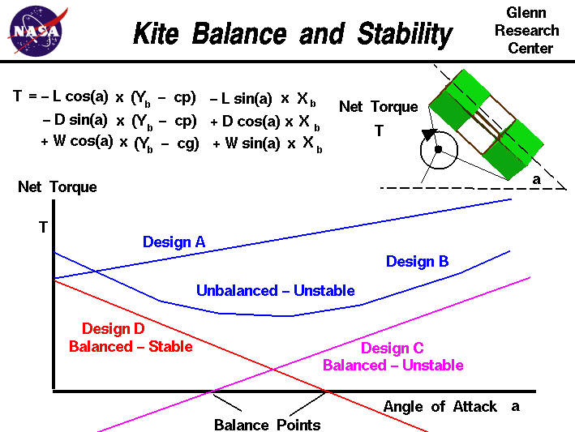

|

Newton's
first law of motion
states that every object remains at rest or in uniform motion in a
straight line unless compelled to change its state by the action of
an external force.
In general, an external force produces both a
translation
and a
rotation
of an object.
The translation is described by Newton's
second law of motion
applied to the
center of gravity, cg,
of the object.
In general, the external force is applied at some point other than the cg.
If the object is unconstrained, like an aircraft in flight, the object
rotates about the cg due to the applied
torque
about the cg.
If the external force is applied at the cg, there is no rotation of
an unconstrained object.
If the object is constrained at some point, called a pivot, the object
rotates about the pivot due to the torque about the pivot.
In equilibrium, or balance, there are no net torques about the pivot and
the object does not rotate.
In flight, a kite rotates about the
bridle point
which is the knot that attaches the
control line
to the
bridle string.
The kite rotates because of the
torques
generated by the
weight
and the
aerodynamic forces.
On this page, we show the
equation
which describes the torque about the bridle point.
T = - L * cos(a) * (yb - cp) - L * sin(a) * xb
- D * sin(a) * (yb - cp) + D * cos(a) * xb
+ W * cos(a) * (yb - cg) + W * sin(a) * xb
where T is the net torque with a positive torque being
in the clockwise direction.
The forces are:
L, the
lift,
D, the
drag,
and W, the
weight.
xb and yb are the co-ordinates of the
bridle point,
cg is the location of the
center of gravity
and cp is the location of the
center of pressure.
Sin and cos are the
trigonometric
sine and cosine functions of the angle
a, the
angle of attack,
The values for the weight and the
geometric
variables are a constant for a particular design.
Therefore, the net torque about the bridle point is a
function
of the angle of attack. Angle of attack appears explicitly in the
equation and also affects the value of the lift and drag forces.
On the slide, we have plotted the net torque versus angle of attack for
several different designs.
If we can determine an angle of attack which makes the net torque equal to zero,
we have a balanced condition and the kite does not rotate in flight.
If the plot for a given design does not cross the angle of attack axis,
the kite never achieves a balanced condition and continuously rotates
about the bridle point. Unbalanced designs are shown in blue for design A and B.
Balanced designs are shown for design C and D with the balance
point indicated on the figure.
But balancing the kite is only part of the design problem. In flight, the kite
experiences small changes in the angle of attack due to turbulence in the air.
If the torque increases with a slight increase in angle of attack, we have an
unstable condition. The increased torque causes the angle of attack to
increase, which causes more torque, which causes more angle of attack .. and the
kite rotates out of control.
On the other hand, if a small increase in angle of attack from the balance point
causes a negative torque, the kite returns to the balance point condition.
This condition is called a stable design; any change away from the
balance point creates a torque which automatically returns the kite to the
balanced condition. For a balanced, stable design, the torque versus angle
of attack plot must cross the angle of attack axis, and have a negative slope.
Balanced and stable design plots are shown in red as design D.
The mathematical equations involved with the
forces
and
torques
on a kite can be solved
by using a computer program. You can use the
KiteModeler program to further study how kites work
and to design your own kites.
Activities:
Guided Tours
Navigation ..


- Beginner's Guide Home Page
|